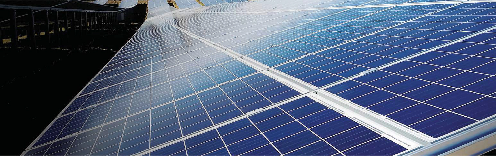

5
TRENDS
THAT WILL SHAPE
SUSTAINABILITY IN 2022
SUSTAINABILITY IN 2022
It may only be March, but 2022 is already shaping up to be a momentous year for sustainable innovation.
Climate change affects us all, and the need for sustainable solutions has never been greater. 2022 offers an opportunity for the world to consider what more can be done to develop such solutions. Guided by a mission to create “sustainable solutions for Earth, for life,” Hanwha is advancing sustainability in its many forms and creating a brighter future for communities across the globe.
With nations pledging to fight climate change by building back better and greener in the wake of COVID-19, what aspects of sustainability are set to take center stage in 2022? To answer that question and more, here’s our roundup of the top sustainability trends to watch this year.
 GREEN Energy Prices
GREEN Energy Prices
Will Continue to Fall
Recently, one of the most promising developments on the topic of sustainability has been the fact that green energy adoption has soared over the last few years. According to the International Energy Agency (IEA), the world added 280 gigawatts (GW) of renewable electricity capacity in 2020 and is on course to add roughly 270 GW in 2021 and 280 GW in 2022.
This has vast implications for solar energy. If this trend continues, 2022 could be the year when total global solar PV capacity finally reaches terawatt (TW) scale. Once the world surpasses that milestone, experts envision a future in which total global solar PV capacity reaches 10 TW by 2030 and 30–70 TW by 2050 – enough to satisfy the majority of the world’s energy needs.
The rapid rise in green energy adoption is being fueled by the fact that renewable energy sources like solar and wind have officially become the cheapest sources of power. Over time, the more capacity is added, the cheaper renewable energy will become. In 2022, the IEA predicts that solar photovoltaic (PV) installations will continue to break records, with annual additions forecast to reach over 160 GW.
Graphs showing a rise in renewable energy adoption and a decrease in renewable energy prices
The combination of falling prices and Hanwha’s commitment to quality could lead the solar modules of Hanwha Solutions’ Q CELLS Division to find their way into even more residential and commercial buildings. Ultimately, increasing the world’s solar capacity will also require more innovative means for developing and installing solar panels. Hanwha has been actively advancing such efforts in Korea and abroad, having contributed Q CELLS solar panels to the development of Korea’s largest floating PV plant, and invested in companies that are at the cutting edge of renewable energy innovation.
In addition to addressing global warming by innovating with solar power, Hanwha has been steadily expanding its wind energy offerings, most recently with the acquisition of RES France in 2021. The acquisition will help tackle climate change by accelerating the company’s transition toward becoming a leading provider of total energy solutions. In other words, it will help Hanwha deliver clean green power to even more people.
We’ll Start to See
a Shift from
‘Net Zero’ to ‘Climate Positive’
Many are likely familiar with the term net zero, which the World Economic Forum defines as a situation in which global greenhouse gas emissions from human activity are in balance with emissions reductions. Most have probably also heard of the concept and importance of the Paris Agreement, which calls for concerted action to keep climate change in check by holding the increase in global average temperatures to less than two degrees Celsius above pre-industrial levels.
With efforts currently falling short, 2022 will be a pivotal year for the world to get back on track to limiting warming to less than two degrees. As the UN Environment Program (UNEP) explains, “New and updated climate commitments fall far short of what is needed to meet the goals of the Paris Agreement, leaving the world on track for a global temperature rise of at least 2.7°C this century.”
In light of this, one of the ways that companies are addressing carbon emissions is by embracing what are known as climate positive activities. Such activities go beyond net zero by actually removing additional carbon dioxide (CO2) from the atmosphere. Hanwha has also taken steps to tackle climate change through its support of various climate-positive activities. These efforts encompass a wide range of areas, with some of the most dynamic examples involving green energy technologies like building-integrated photovoltaics (BIPV) and solar-powered afforestation.
Key to designing green buildings and other aspects of sustainable development, BIPV systems utilize solar modules as both a building material and a source of power. For years, Hanwha has been helping buildings in Korea – including its very own headquarters – improve their energy efficiency by installing solar modules on their exteriors.
Like BIPV, Hanwha Solar Forest is another product of Hanwha’s ongoing commitment to sustainability. For years, the project has promoted afforestation as an effective means for tackling global warming by creating solar-powered nurseries in China and Korea. These are just a few of the many ways that Hanwha technologies have been reducing pollution, tackling climate change and helping humans coexist with nature.


Recently, Hanwha completed a BIPV-based renovation of its headquarters that integrated solar panels into the building's exterior.
More Countries
Will Start Tapping
Green Hydrogen’s Potential
In 2022, we can expect more countries to harness the power of hydrogen, the most abundant substance in the universe.
In 2019, France, Japan and Korea were the only Group of Twenty (G20) countries that featured strategies for utilizing hydrogen. Today, 17 governments have released hydrogen strategies, more than 20 have publicly announced that they are working on developing such strategies, and numerous companies are seeking to tap into hydrogen-related business opportunities. In all, more than 90 projects are being planned worldwide to utilize hydrogen in industry.
On top of that, the hydrogen generation market is projected to reach $154.74 billion by 2022. With more countries hoping to tap hydrogen’s incredible potential, Hanwha has been taking steps to make the production of green hydrogen – which produces only oxygen as a byproduct – more efficient by making hydrogen electrolysis more affordable and developing anion exchange membrane water electrolyzer (AEMWE) technology. In line with these efforts, in 2021, Hanwha became the first Korean company to acquire mixed hydrogen combustion technologies. These technologies allow liquefied natural gas (LNG) and hydrogen to be burned together to generate electricity with lower CO2 emissions. The widespread use of such technologies would help tackle climate change while bringing us closer to creating a carbon-neutral society.
Going forward, Hanwha’s efforts to produce green hydrogen at a large scale and at affordable prices will help pave the way for more countries to take advantage of this versatile source of energy.
An image showing mixed hydrogen combustion process
 Packaging and Transportation
Packaging and Transportation
Will Become More Sustainable
According to a recent report based on a survey of more than 15,000 people, 67% of consumers, especially young people, consider it important that the products they buy feature recyclable packaging.
This proves that despite the challenges of the COVID-19 pandemic, sustainable packaging remains a top priority for a consumer base that’s becoming increasingly concerned about plastic pollution. We can expect this trend to continue in 2022 as consumers seek out more ways to reduce their impact on the environment and as governments take steps to reduce plastic waste. Advancements like Hanwha Compound’s durable PLA (polylactic acid) material will further those efforts by making eco-friendly biodegradable plastic a fixture of daily life.
In addition, on the heels of a pledge signed at COP26 to accelerate the transition to zero emission vehicles, we can expect more manufacturers to get behind cleaner forms of transportation in 2022. Hanwha has been deeply involved in this aspect of sustainability as well, having spent the last few years investing in key components of future mobility systems.
This year, the company and its partners will continue developing the technology and infrastructure required to make urban air mobility (UAM) a reality. In addition to working with Overair,* an advanced air mobility company based in California, Hanwha Systems has joined forces with Skyports, the world’s leading UAM infrastructure provider, to collaborate on the development of infrastructure for advanced air mobility, including vertiports and vertihubs.
*Overair, Inc. is positioned to be a global leader in advanced air mobility. Based in Santa Ana, California, Overair’s growing team is harnessing decades of military aircraft innovation to design, manufacture and operate all-electric vertical takeoff and landing aircraft. With a path to FAA certification in 2025, Overair is dedicated to making the world a smaller and cleaner place for everyone with the Butterfly, the most robust, most efficient and quietest aircraft in its class.
Biodegradable plastic life cycle infographic
An infographic highlighting Butterfly's key technology
Financial Services
Will Become
More Sustainable
A key topic in financial circles in 2021, ethical finance – also known as sustainable finance – is expected to continue making waves in 2022. The concept can be broken down into three categories: green, social, and sustainability-linked finance. Guided by a desire to advance sustainable management efforts with their financial activities, in 2021, Hanwha’s six financial divisions announced a landmark commitment not to participate in, underwrite bonds for or finance coal-powered plants.
In addition, Hanwha Investment & Securities has been supporting a next-generation financial network called Lightnet that promotes inclusivity for the unbanked and underbanked in Asia. At the same time, Hanwha DREAMPLUS continues to operate global centers that offer support for startups aiming to expand overseas. With global centers in the U.S. and Japan, and with plans to establish services in China, Vietnam, Indonesia and Singapore, DREAMPLUS continues to explore opportunities to collaborate with companies and help startups succeed within its program.
Soon, efforts like these will offer more people access to better financial services and ensure that the services themselves come at minimal cost to society and the environment.
An image showing six Hanwha financial divisions making coal-free commitments
A Pivotal Moment
While we cannot know for sure what tomorrow will hold, we can be certain that the need for transformational sustainability has never been greater.
By aligning its initiatives and innovations with the trends above, Hanwha is demonstrating that not only is it committed to being part of the solution to the all-encompassing problem of climate change, but it’s also ready to help lead the world toward a brighter and more sustainable future.
Related Contents
-
 Plugging into the Sun: How Hanwha is Leading with Innovations in Solar Energy
While an array of eco-friendly, green energy options are available today, solar power has evidently become a clear favorite in recent years, as seen by the double-digit growth in total PV capacity year over year across the last ten years.
Plugging into the Sun: How Hanwha is Leading with Innovations in Solar Energy
While an array of eco-friendly, green energy options are available today, solar power has evidently become a clear favorite in recent years, as seen by the double-digit growth in total PV capacity year over year across the last ten years.
-
 Afforestation can help to tackle climate change. Here’s how
Afforestation is establishing a forest, especially on land not previously forested.
Afforestation can help to tackle climate change. Here’s how
Afforestation is establishing a forest, especially on land not previously forested.

Related Affiliates
-
 Hanwha Solutions
Hanwha Solutions is a newly formed corporation with the merger of Hanwha Chemical, Hanwha Qcells, and Hanwha Advanced Materials in January of 2020. Hanwha Solutions operates in three business areas: chemicals, total energy solutions, and advanced materials.
Hanwha Solutions
Hanwha Solutions is a newly formed corporation with the merger of Hanwha Chemical, Hanwha Qcells, and Hanwha Advanced Materials in January of 2020. Hanwha Solutions operates in three business areas: chemicals, total energy solutions, and advanced materials.
-
 Hanwha Systems
As a leading global total solutions company, Hanwha Systems provides differentiated smart technologies in defense ICT and information infrastructure. In August 2018, we launched the new ICT division through the merger with Hanwha S&C. Our ICT division will enable us to increase our leadership in defense electronics by leveraging advanced defense IT and system integration capabilities. And by strengthening our SI business competencies, we will be able to expand into areas of public infrastructure and private security.
Hanwha Systems
As a leading global total solutions company, Hanwha Systems provides differentiated smart technologies in defense ICT and information infrastructure. In August 2018, we launched the new ICT division through the merger with Hanwha S&C. Our ICT division will enable us to increase our leadership in defense electronics by leveraging advanced defense IT and system integration capabilities. And by strengthening our SI business competencies, we will be able to expand into areas of public infrastructure and private security.
-
 Hanwha Investment & Securities
Established in 1962, Hanwha Investment & Securities provides comprehensive asset management services, including brokerage and acquisition of stocks, bonds, and derivatives, as well as sales and asset management services for various financial products. With our differentiated systems and high-quality talent, we have successfully established ourselves as a reliable asset management partner. Our financial products and customer-oriented services are offered domestically and overseas.
Hanwha Investment & Securities
Established in 1962, Hanwha Investment & Securities provides comprehensive asset management services, including brokerage and acquisition of stocks, bonds, and derivatives, as well as sales and asset management services for various financial products. With our differentiated systems and high-quality talent, we have successfully established ourselves as a reliable asset management partner. Our financial products and customer-oriented services are offered domestically and overseas.